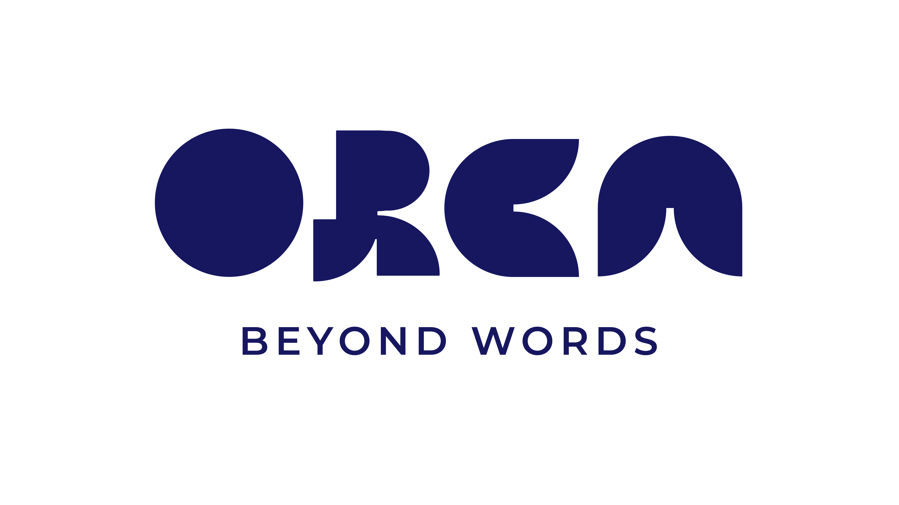
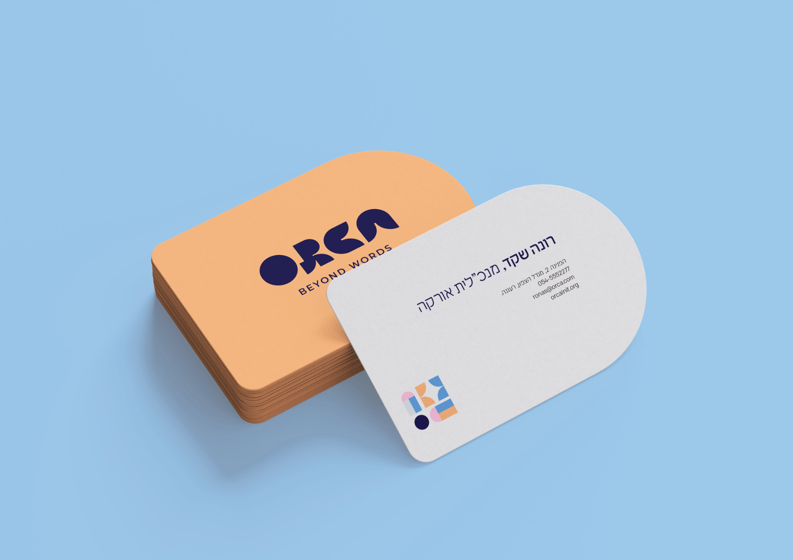
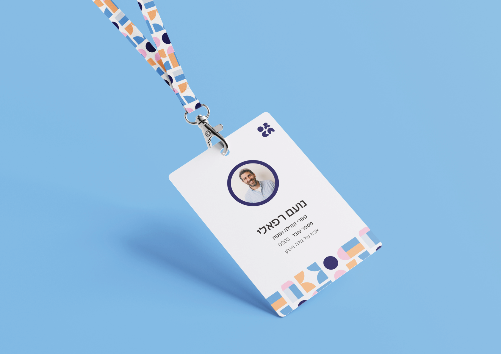
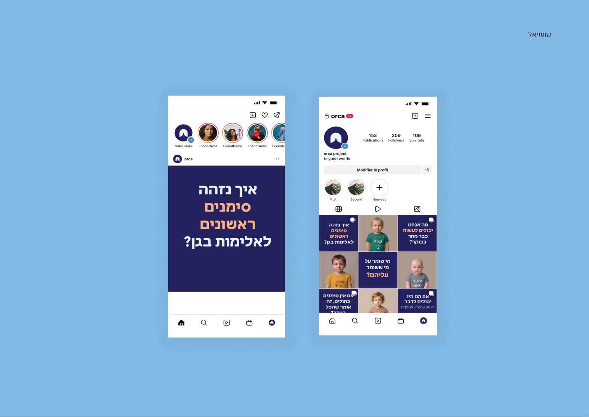
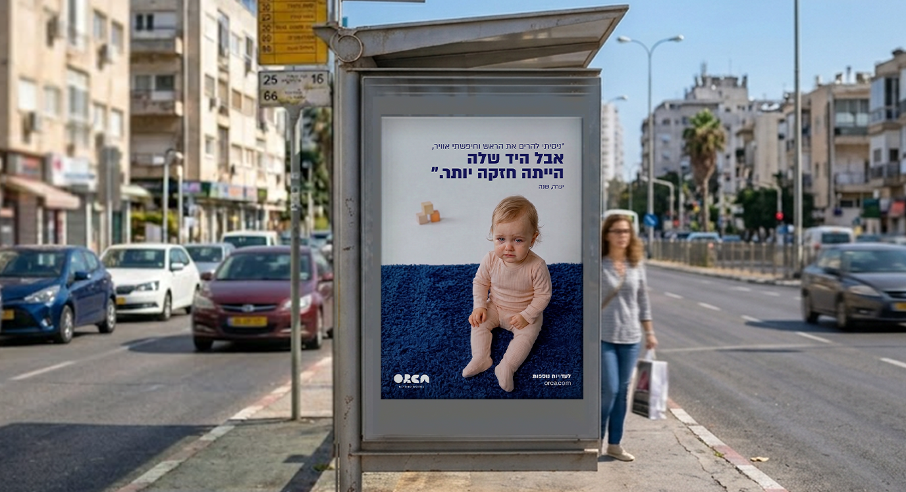
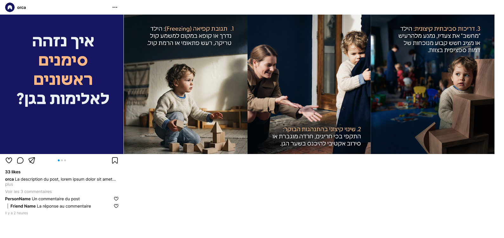
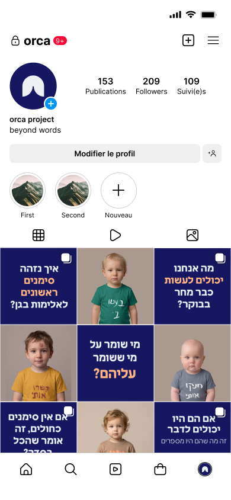
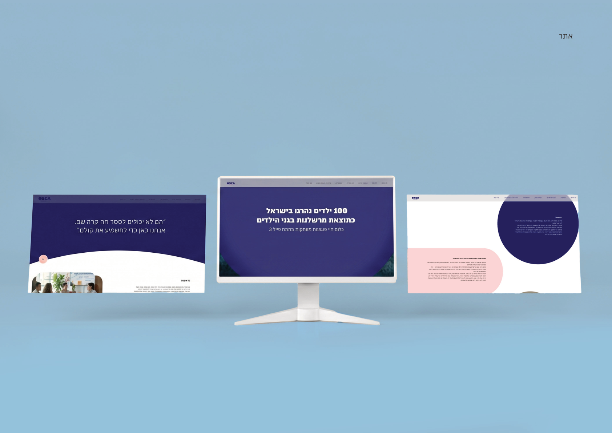
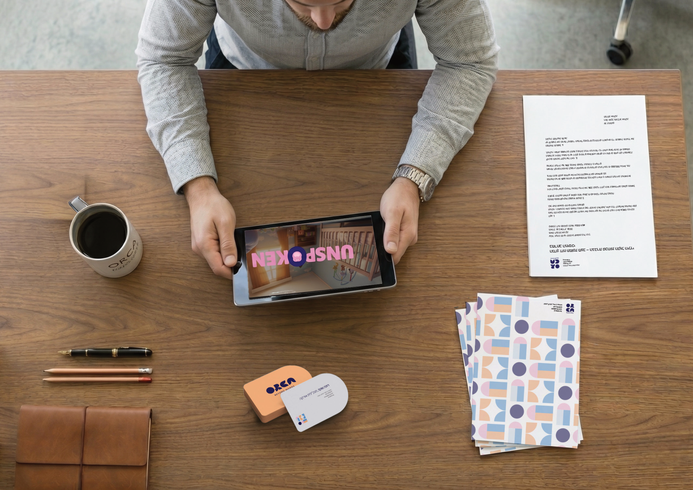

A documentary awareness campaign giving voice to those who cannot speak for themselves.
Violence in early childhood education frameworks is an elusive and disturbing phenomenon, often remaining "invisible" due to the children's inability to testify about what they have experienced. The challenge was to use visual communication not just to point out the problem, but to give a voice to those who cannot speak for themselves and to spark an emotional resonance that demands a shift in consciousness and legislation.
A documentary project based on live testimonies. It includes a typographic installation, AI-based cinematic videos, and a VR simulator developed in Unity that allows users to experience the world from a toddler's perspective, aiming to create a deep emotional understanding that traditional campaigns fail to convey.







